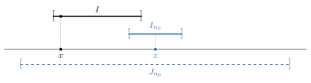
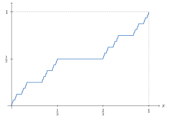

Chapter 17. Differentiation and Integration
The Fundamental Theorem of Calculus in Section 9.3 has two halves. If \(f\) is continuous, then \(\int_a^xf\) has derivative \(f\). If \(F'\) is Riemann integrable, then \(\int_a^bF'=F(b)-F(a)\). This chapter proves versions of both halves for the Lebesgue integral. The first half holds for every integrable \(f\), almost everywhere. The second half needs the right class of functions \(F\). It is not enough for \(F\) to be continuous and differentiable almost everywhere. The right class is the absolutely continuous functions.
Section 17.1, which is marked with a star, proves the Vitali Covering Lemma, a tool for choosing disjoint intervals. Section 17.2 uses it to show that monotone functions are differentiable almost everywhere. Section 17.3 returns to functions of bounded variation, which are differences of monotone functions. Section 17.4 differentiates integrals. Section 17.5 introduces absolute continuity and proves the Fundamental Theorem of Calculus for the Lebesgue integral. Section 17.6, also starred, builds the Cantor function. It is continuous and increasing, and its derivative is \(0\) almost everywhere, but it is not constant. Section 17.7, also starred, builds Volterra’s function. It is differentiable everywhere with a bounded derivative that is not Riemann integrable.
What this chapter uses from earlier chapters. Limits superior and inferior (Section 3.6), the Fundamental Theorem of Calculus and the Mean Value Theorem for Integrals (Chapter 9), the definitions in Section 8.1, outer measure (Chapter 14), and the integral and the convergence theorems (Chapter 16). Section 17.6 uses the Cantor set (Chapter 5). Section 17.7 uses Lebesgue’s Theorem (Theorem 9.2.9).
17.1 The Vitali Covering Lemma*
This section can be skipped. Later sections use the statement of the Vitali Covering Lemma, Lemma 17.1.2, but not its proof.
To show that a set is small, we cover it by intervals with small total length. Sometimes the opposite is needed. We are handed many intervals around the points of a set \(E\), and we want to pick finitely many disjoint ones that cover almost all of \(E\). This is possible when the intervals around each point can be as short as we like.
Definition 17.1.1. Let \(\mathcal{I}\) be a collection of intervals. Then \(\mathcal{I}\) covers a set \(E\) in the sense of Vitali if for all \(\varepsilon>0\) and for all \(x\in E\), there exists an \(I\in\mathcal{I}\) such that \(x\in I\) and \(\ell(I)<\varepsilon\). The intervals may be open, half open, or closed, but must not be degenerate intervals consisting of only one point. Such a collection is called a Vitali covering of \(E\).
Lemma 17.1.2 (Vitali Covering Lemma).
Let \(E\) be a set with \(m^*(E)<\infty\) and \(\mathcal{I}\) a collection of intervals that cover \(E\) in the sense of Vitali. Then for all \(\varepsilon>0\), there exists a finite disjoint collection \(\{I_1,\dots,I_N\}\) of intervals in \(\mathcal{I}\) such that \[m^*\left(E\setminus\bigcup_{n=1}^NI_n\right)<\varepsilon.\]
Proof.
Step 1. Two reductions. Replace each interval of \(\mathcal{I}\) by its closure. This changes no lengths. It changes a union of finitely many intervals by finitely many points, which does not change outer measure. If the closures are disjoint, so are the original intervals. So we may assume every interval in \(\mathcal{I}\) is closed. Next, by Theorem 14.1.10, there is an open set \(U\supset E\) with \(m(U)<\infty\). Discard the intervals of \(\mathcal{I}\) that are not contained in \(U\). What is left still covers \(E\) in the sense of Vitali. Indeed, each \(x\in E\) has a neighborhood \((x-r,x+r)\subset U\), and every interval of \(\mathcal{I}\) that contains \(x\) and is shorter than \(r\) lies in it.
Step 2. A greedy choice. Choose any \(I_1\in\mathcal{I}\). Suppose \(I_1,\dots,I_n\) have been chosen and are pairwise disjoint. If \(E\subset I_1\cup\cdots\cup I_n\), stop. The lemma holds with \(N=n\). Otherwise, let \[k_n=\sup\{\ell(I):I\in\mathcal{I}\text{ and }I\text{ is disjoint from }I_1,\dots,I_n\}.\] This set of lengths is not empty. A point \(x\in E\) outside the closed set \(I_1\cup\cdots\cup I_n\) has a neighborhood that misses this set, and some interval of \(\mathcal{I}\) that contains \(x\) lies in that neighborhood. Also \(k_n\le m(U)<\infty\). Choose \(I_{n+1}\in\mathcal{I}\), disjoint from \(I_1,\dots,I_n\), with \(\ell(I_{n+1})>\frac12k_n\).
If the process never stops, it produces pairwise disjoint intervals \(I_1,I_2,\dots\) in \(U\). By countable additivity, \(\sum_n\ell(I_n)\le m(U)<\infty\). In particular, \(\ell(I_n)\to0\). Let \(\varepsilon>0\). Choose \(N\) with \(\sum_{n=N+1}^\infty\ell(I_n)<\frac\varepsilon 5\).
Step 3. The leftover set is small. Let \(R=E\setminus\bigcup_{n=1}^NI_n\). For each \(n\), let \(J_n\) be the closed interval with the same midpoint as \(I_n\) and five times its length. We show \(R\subset\bigcup_{n=N+1}^\infty J_n\). Then \[m^*(R)\le\sum_{n=N+1}^\infty\ell(J_n)=5\sum_{n=N+1}^\infty\ell(I_n)<\varepsilon.\]
Let \(x\in R\). As in Step 2, there is an \(I\in\mathcal{I}\) with \(x\in I\) that is disjoint from \(I_1,\dots,I_N\). The interval \(I\) must meet some \(I_n\). Otherwise \(I\) would be disjoint from \(I_1,\dots,I_n\) for every \(n\), and so \(\ell(I)\le k_n<2\ell(I_{n+1})\) for every \(n\). This would force \(\ell(I)=0\), but \(I\) is not degenerate. Let \(n_0\) be the smallest index with \(I\cap I_{n_0}\ne\emptyset\). Then \(n_0>N\). Also \(I\) is disjoint from \(I_1,\dots,I_{n_0-1}\), so \(\ell(I)\le k_{n_0-1}<2\ell(I_{n_0})\). Let \(z\) be the midpoint of \(I_{n_0}\). Since \(x\in I\) and \(I\) meets \(I_{n_0}\), \[|x-z|\le\ell(I)+\frac12\ell(I_{n_0})<\frac52\ell(I_{n_0}).\] So \(x\in J_{n_0}\). See Figure 17.1.
∎

Proof Technique (Greedy Choices).
The proof of Lemma 17.1.2 picks intervals one at a time, each time taking one that is nearly as long as possible among those still allowed. This is a greedy construction. The longest allowed interval may not exist, since a supremum need not be attained. So the proof settles for one longer than half the supremum. The payoff comes at the end. Any interval that was passed over is not much longer than one that was chosen, so a fixed enlargement of the chosen intervals covers everything that was missed.
Exercises
Exercise 17.1.1. Let \(E=[0,1]\) and \(\mathcal{I}=\left\{\left[0,\frac23\right],\left[\frac13,1\right]\right\}\). Show that \(\mathcal{I}\) covers \(E\), but every disjoint subcollection of \(\mathcal{I}\) misses a part of \(E\) of measure at least \(\frac13\). Which hypothesis of Lemma 17.1.2 fails? [Solution]
Exercise 17.1.2. Under the hypotheses of Lemma 17.1.2, prove that there is a countable disjoint collection \(\{I_n\}\) of intervals in \(\mathcal{I}\) with \(m^*\bigl(E\setminus\bigcup_nI_n\bigr)=0\). [Hint]
Exercise 17.1.3. Let \(E\subset\mathbb{R}\). Show that the closed intervals with rational endpoints that meet \(E\) form a Vitali covering of \(E\). [Hint]
17.2 Differentiating Monotone Functions
A continuous function can fail to be differentiable at every point, as the Weierstrass function in Section 11.3 shows. A monotone function cannot be that bad. This section proves that a monotone function is differentiable almost everywhere. To handle points where the derivative might not exist, we use four one-sided substitutes that always exist.
Definition 17.2.1. Let \(f\) be a real-valued function defined on an interval containing \(x\). Define the (Dini) derivatives of \(f\) as follows: \[D^+f(x)=\limsup_{h\to0^+}\frac{f(x+h)-f(x)}{h},\qquad D^-f(x)=\limsup_{h\to0^{+}}\frac{f(x)-f(x-h)}{h},\] \[D_+f(x)=\liminf_{h\to0^+}\frac{f(x+h)-f(x)}{h},\qquad D_-f(x)=\liminf_{h\to0^{+}}\frac{f(x)-f(x-h)}{h}.\] By Definition 7.1.1, \(f\) is differentiable at an interior point \(x\) exactly when \(D^+f(x)=D_+f(x)=D^-f(x)=D_-f(x)\ne\pm\infty\), and then \(f'(x)\) is the common value of the derivatives at \(x\). If \(D^+f(x)=D_+f(x)\), \(f\) has a right-hand derivative, denoted \(f'(x+)\). If \(D^-f(x)=D_-f(x)\), \(f\) has a left-hand derivative, denoted \(f'(x-)\).
Here \(\limsup_{h\to0^+}g(h)\) means \(\inf_{\delta>0}\sup\{g(h):0<h<\delta\}\), and \(\liminf_{h\to0^+}g(h)\) means \(\sup_{\delta>0}\inf\{g(h):0<h<\delta\}\). As \(\delta\) decreases, \(\sup\{g(h):0<h<\delta\}\) decreases. So, as with sequences in Section 3.6, these always exist as values in \([-\infty,\infty]\). Also \(D_+f(x)\le D^+f(x)\) and \(D_-f(x)\le D^-f(x)\). The right derivatives \(D^+f\) and \(D_+f\) look only to the right of \(x\), and the left derivatives \(D^-f\) and \(D_-f\) only to the left. For example, if \(f(x)=|x|\), then \(D^+f(0)=D_+f(0)=1\) and \(D^-f(0)=D_-f(0)=-1\). If \(f\) is increasing, every difference quotient is at least \(0\), so all four Dini derivatives are at least \(0\).
Theorem 17.2.2. If \(f\) is continuous on \([a,b]\) and one of its derivatives is everywhere nonnegative on \((a,b)\), then \(f\) is nondecreasing on \([a,b]\). That is, \(f(x)\le f(y)\) for \(x\le y\).
Proof. See Exercise 17.2.1, which treats \(D_+f\). The other three cases are similar.
∎
Theorem 17.2.3 (Lebesgue’s Differentiation Theorem).
Let \(f\) be an increasing real-valued function on the interval \([a,b]\). Then \(f\) is differentiable almost everywhere, the derivative \(f'\) is measurable and \[\int_{[a,b]}f'\le f(b)-f(a).\] (Here \(f'\) is defined only almost everywhere. Its values on a set of measure zero do not affect measurability or the integral.)
Proof.
Step 1. \(D^+f\le D_-f\) a.e. Let \(E\) be the set of \(x\in(a,b)\) with \(D^+f(x)>D_-f(x)\). For rational numbers \(u>v\), let \[E_{u,v}=\{x\in(a,b):D^+f(x)>u>v>D_-f(x)\}.\] Between two extended real numbers there is a rational number. So \(E\) is the union of the countably many sets \(E_{u,v}\), and it is enough to show \(m^*(E_{u,v})=0\). Fix \(u>v\) and let \(s=m^*(E_{u,v})\le b-a\). Since \(f\) is increasing, \(D_-f\ge0\). So \(v>0\). Let \(\varepsilon>0\), and choose an open set \(U\supset E_{u,v}\) with \(m(U)<s+\varepsilon\) (Theorem 14.1.10). Replacing \(U\) by \(U\cap(a,b)\), we may assume \(U\subset(a,b)\).
Let \(x\in E_{u,v}\). Since \(D_-f(x)<v\), there are arbitrarily small \(h>0\) with \(f(x)-f(x-h)<vh\). If \(h\) is small, \([x-h,x]\subset U\). These intervals form a Vitali covering of \(E_{u,v}\). By the Vitali Covering Lemma, there are disjoint intervals \(I_n=[x_n-h_n,x_n]\), \(n=1,\dots,N\), of this kind with \(m^*\bigl(E_{u,v}\setminus\bigcup_nI_n\bigr)<\varepsilon\). Let \(A\) be the set of points of \(E_{u,v}\) in the interiors \((x_n-h_n,x_n)\). Removing the finitely many endpoints does not change outer measure, so by subadditivity \(m^*(A)>s-\varepsilon\). The intervals \(I_n\) are disjoint and lie in \(U\), so \(\sum_nh_n\le m(U)\). Thus \[\sum_{n=1}^N\bigl[f(x_n)-f(x_n-h_n)\bigr]<v\sum_{n=1}^Nh_n\le v\,m(U)<v(s+\varepsilon). \tag{17.2.1}\]
Now let \(y\in A\). Since \(D^+f(y)>u\), there are arbitrarily small \(k>0\) with \(f(y+k)-f(y)>uk\). If \(k\) is small, \([y,y+k]\) lies inside the interval \((x_n-h_n,x_n)\) that contains \(y\). These intervals form a Vitali covering of \(A\). By the Vitali Covering Lemma again, there are disjoint intervals \([y_j,y_j+k_j]\), \(j=1,\dots,M\), of this kind that cover all of \(A\) except a set of outer measure less than \(\varepsilon\). So \(\sum_jk_j>m^*(A)-\varepsilon>s-2\varepsilon\), and \[\sum_{j=1}^M\bigl[f(y_j+k_j)-f(y_j)\bigr]>u\sum_{j=1}^Mk_j>u(s-2\varepsilon). \tag{17.2.2}\]
Each interval \([y_j,y_j+k_j]\) lies inside some \(I_n\). Fix \(n\), and list the intervals \([y_j,y_j+k_j]\) inside \(I_n\) from left to right. They are disjoint and \(f\) is increasing, so the sum of the increases of \(f\) over them is at most the increase \(f(x_n)-f(x_n-h_n)\) over all of \(I_n\). Summing over \(n\), and using (17.2.1) and (17.2.2), \[u(s-2\varepsilon)<\sum_{j=1}^M\bigl[f(y_j+k_j)-f(y_j)\bigr]\le\sum_{n=1}^N\bigl[f(x_n)-f(x_n-h_n)\bigr]<v(s+\varepsilon).\] This holds for every \(\varepsilon>0\), so \(us\le vs\). Since \(u>v\) and \(s\ge0\), \(s=0\).
Step 2. All four Dini derivatives agree a.e. The function \(\tilde f(x)=-f(-x)\) is increasing on \([-b,-a]\). Directly from the definitions, \(D^+\tilde f(x)=D^-f(-x)\) and \(D_-\tilde f(x)=D_+f(-x)\). So Step 1 applied to \(\tilde f\) gives \(D^-f\le D_+f\) a.e. Together with Step 1, \[D^+f\le D_-f\le D^-f\le D_+f\le D^+f\quad\text{a.e.}\] So the four Dini derivatives are equal a.e. Call the common value \(g(x)\). It lies in \([0,\infty]\).
Step 3. The integral. Extend \(f\) to \([a,b+1]\) by \(f(x)=f(b)\) for \(x>b\). For \(n\in\mathbb{N}\) and \(x\in[a,b]\), let \[g_n(x)=n\left[f\left(x+\frac1n\right)-f(x)\right].\] Each \(g_n\) is measurable, since increasing functions are measurable (Example 15.1.3). Also \(g_n\ge0\), and \(g_n\to g\) a.e. So \(g\) is measurable, and by Fatou’s Lemma, \[\int_{[a,b]}g\le\liminf\int_{[a,b]}g_n.\] Monotone functions are Riemann integrable (Theorem 9.2.2), so the integrals of \(g_n\) are Riemann integrals by Theorem 16.3.3. The upper and lower sums of \(x\mapsto f\left(x+\frac1n\right)\) for a partition \(\mathcal{P}\) of \([a,b]\) are the upper and lower sums of \(f\) for the shifted partition \(\mathcal{P}+\frac1n\). So \(\int_a^bf\left(x+\frac1n\right)dx=\int_{a+1/n}^{b+1/n}f\). By Theorem 9.2.13, \[\int_{[a,b]}g_n=n\int_b^{b+1/n}f-n\int_a^{a+1/n}f=f(b)-n\int_a^{a+1/n}f\le f(b)-f(a),\] since \(f=f(b)\) on \(\left[b,b+\frac1n\right]\) and \(f\ge f(a)\) on \(\left[a,a+\frac1n\right]\). Thus \(\int_{[a,b]}g\le f(b)-f(a)<\infty\). By Lemma 16.4.12, \(g<\infty\) a.e. So at almost every \(x\), the four Dini derivatives are equal and finite. There \(f\) is differentiable and \(f'(x)=g(x)\).
∎
The inequality can be strict. Let \(f=\chi_{[1/2,1]}\) on \([0,1]\). Then \(f'=0\) except at \(\frac12\), so \(\int_{[0,1]}f'=0<1=f(1)-f(0)\). The jump at \(\frac12\) counts in \(f(1)-f(0)\) but not in the integral. Section 17.6 gives a continuous increasing function with the same behavior.
Proof Technique (Splitting a Bad Set Using Rationals).
To show that an inequality \(A(x)\le B(x)\) holds almost everywhere, look at the bad set \(\{A>B\}\). Whenever \(A(x)>B(x)\), there are rational numbers \(u>v\) with \(A(x)>u>v>B(x)\). So the bad set is a countable union of the sets \(\{A>u>v>B\}\), and it is enough to show each of these has measure zero. Fixing \(u\) and \(v\) turns a comparison between two varying quantities into two comparisons with fixed numbers, which are much easier to use. Step 1 of the proof of Theorem 17.2.3 works this way. The same trick, with one rational number, appeared in the proof of Theorem 15.1.4.
Exercises
Exercise 17.2.1. If \(f\) is continuous on \([a,b]\) and \(D_+f\) is everywhere nonnegative on \((a,b)\), prove \(f\) is nondecreasing on \([a,b]\). Then prove Theorem 17.2.2 when \(D^-f\ge0\), and explain why this proves Theorem 17.2.2 for all four Dini derivatives. [Hint]
Exercise 17.2.2. Find the four Dini derivatives at \(0\) of \(f(x)=x\sin\frac1x\), \(f(0)=0\), and of the Dirichlet function \(\chi_\mathbb{Q}\). [Hint]
Exercise 17.2.3. Prove that \(D^+(-f)(x)=-D_+f(x)\) and \(D^-(-f)(x)=-D_-f(x)\). [Hint]
Exercise 17.2.4. Let \(f\) be decreasing on \([a,b]\). Prove that \(f\) is differentiable a.e. and \(\int_{[a,b]}f'\ge f(b)-f(a)\). [Hint]
Exercise 17.2.5. Let \(\{r_n\}\) be an enumeration of the rational numbers in \((0,1)\), and let \(f(x)=\sum_{n:\,r_n\le x}2^{-n}\) for \(x\in[0,1]\). Prove that \(f\) is increasing and discontinuous at every rational number in \((0,1)\). Conclude that \(f\) is differentiable almost everywhere. [Hint]
17.3 Functions of Bounded Variation Revisited
Functions of bounded variation were studied in Chapter 8, which was optional. Here are the definitions again. For a partition \(\mathcal{P}=\{x_0,\dots,x_k\}\) of \([a,b]\), let \(V(\mathcal{P})=\sum_{i=1}^k|f(x_i)-f(x_{i-1})|\). The total variation of \(f\) on \([a,b]\) is \(V_f[a,b]=\sup_\mathcal{P}V(\mathcal{P})\), and \(f\) is of bounded variation, written \(f\in BV[a,b]\), if \(V_f[a,b]<\infty\) (Definition 8.1.5). The Jordan Decomposition Theorem (Theorem 8.2.5) says \(f\in BV[a,b]\) exactly when \(f\) is a difference of two increasing functions. This section gives a second proof, using the variation up and the variation down separately. Then Theorem 17.2.3 applies to functions of bounded variation.
Definition 17.3.1. Let \(f\) be a real-valued function on \([a,b]\), and let \(\mathcal{P}=\{x_0,x_1,\dots,x_k\}\) be a partition of \([a,b]\). Define \[p(\mathcal{P})=\sum_{i=1}^k[f(x_i)-f(x_{i-1})]^+,\qquad n(\mathcal{P})=\sum_{i=1}^k[f(x_i)-f(x_{i-1})]^-,\] and \[V(\mathcal{P})=p(\mathcal{P})+n(\mathcal{P})=\sum_{i=1}^k|f(x_i)-f(x_{i-1})|,\] where \(r^+\) is \(r\) if \(r\ge 0\) and \(0\) if \(r\le 0\) and set \(r^-=|r|-r^+\). Note \(f(b)-f(a)=p(\mathcal{P})-n(\mathcal{P})\).
Set \[P_f[a,b]=\sup_{\mathcal{P}} p(\mathcal{P}),\qquad N_f[a,b]=\sup_{\mathcal{P}} n(\mathcal{P}),\qquad\text{and}\qquad V_f[a,b]=\sup_{\mathcal{P}} V(\mathcal{P}),\] where the supremum is taken over all possible partitions of \([a,b]\).
Notice \(P_f[a,b]\le V_f[a,b]\le P_f[a,b]+N_f[a,b]\). The quantities \(P_f[a,b]\), \(N_f[a,b]\) and \(V_f[a,b]\) are the positive, negative, and total variations of \(f\) over \([a,b]\). If \(V_f[a,b]<\infty\), \(f\) is of bounded variation over \([a,b]\), written \(f\in BV[a,b]\).
Lemma 17.3.2. If \(f\in BV[a,b]\), then \[V_f[a,b]=P_f[a,b]+N_f[a,b]\quad\text{and}\quad f(b)-f(a)=P_f[a,b]-N_f[a,b].\]
Proof. For any partition \(\mathcal{P}\) of \([a,b]\), \[p(\mathcal{P})=n(\mathcal{P})+f(b)-f(a).\] Both \(p(\mathcal{P})\) and \(n(\mathcal{P})\) are at most \(V(\mathcal{P})\le V_f[a,b]<\infty\). Taking the supremum over \(\mathcal{P}\) on both sides gives \[P_f[a,b]=N_f[a,b]+f(b)-f(a).\] Also, \[V(\mathcal{P})=p(\mathcal{P})+n(\mathcal{P})=2p(\mathcal{P})-\bigl(f(b)-f(a)\bigr).\] So \[V_f[a,b]=2P_f[a,b]-\bigl(f(b)-f(a)\bigr)=P_f[a,b]+N_f[a,b].\]
∎
Theorem 17.3.3 (Jordan Decomposition Theorem).
A function \(f\) is of bounded variation on \([a,b]\) if and only if it is the difference of two monotone real-valued functions on \([a,b]\).
Proof. (\(\Rightarrow\)) Let \(f\) be of bounded variation on \([a,b]\) and set \(g(x)=P_f[a,x]\) and \(h(x)=N_f[a,x]\), with \(g(a)=h(a)=0\). Then \(g\) and \(h\) are monotone increasing functions (Exercise 17.3.1) which are real-valued, since \(0\le P_f[a,x]\le V_f[a,x]\le V_f[a,b]<\infty\) and \(0\le N_f[a,x]\le V_f[a,x]\le V_f[a,b]<\infty\), by Theorem 8.2.1. But by Lemma 17.3.2 on \([a,x]\), \(f(x)=g(x)-h(x)+f(a)\). Since \(h-f(a)\) is a monotone function, \(f\) is the difference of two monotone functions.
(\(\Leftarrow\)) If \(f=g-h\) on \([a,b]\) with \(g\) and \(h\) increasing, then for a partition \(a=x_0<x_1<\cdots<x_n=b\) of \([a,b]\), \[\begin{aligned} \sum_{i=1}^n|f(x_i)-f(x_{i-1})|&\le\sum_{i=1}^n[g(x_i)-g(x_{i-1})]+\sum_{i=1}^n[h(x_i)-h(x_{i-1})]\\ &=g(b)-g(a)+h(b)-h(a). \end{aligned}\] Hence \(V_f[a,b]\)\(\le g(b)-g(a)+h(b)-h(a)<\infty\).
∎
This is a second proof of Theorem 8.2.5. The decomposition there was \(f=V_f-(V_f-f)\), where \(V_f(x)=V_f[a,x]\). Exercise 17.3.3 shows how the two decompositions are related.
Corollary 17.3.4. If \(f\) is of bounded variation on \([a,b]\), then \(f'(x)\) exists a.e. on \([a,b]\), and \(f'\) is integrable over \([a,b]\).
Proof. This is an immediate consequence of Theorem 17.3.3 and Theorem 17.2.3. Write \(f=g-h\) with \(g\) and \(h\) increasing. Then \(f'=g'-h'\) wherever \(g\) and \(h\) are both differentiable, which is almost everywhere. Also \(|f'|\le g'+h'\) a.e., and \(\int_{[a,b]}(g'+h')\le g(b)-g(a)+h(b)-h(a)<\infty\).
∎
Theorem 17.3.5. Let \(\{f_n\}\) be a sequence of functions on \([a,b]\) with \(f_n\to f\) on \([a,b]\). Then \[V_f[a,b]\le\liminf V_{f_n}[a,b].\]
Proof. See Exercise 17.3.2.
∎
Exercises
Exercise 17.3.1. Let \(f:[a,b]\to\mathbb{R}\) and \(a\le x<y\le b\). Prove that \(P_f[a,x]\le P_f[a,y]\) and \(N_f[a,x]\le N_f[a,y]\). [Hint]
Exercise 17.3.2. Let \(\{f_n\}\) be a sequence of functions on \([a,b]\) with \(f_n\to f\) on \([a,b]\). Prove \(V_f[a,b]\le\liminf V_{f_n}[a,b]\). Then show that the inequality can be strict. [Hint]
Exercise 17.3.3. Let \(f\in BV[a,b]\). Prove that \(P_f[a,x]=\frac12\bigl(V_f[a,x]+f(x)-f(a)\bigr)\) and \(N_f[a,x]=\frac12\bigl(V_f[a,x]-f(x)+f(a)\bigr)\). [Hint]
Exercise 17.3.4. Find \(P_f[0,2\pi]\), \(N_f[0,2\pi]\) and \(V_f[0,2\pi]\) for \(f(x)=\sin x\). [Hint]
Exercise 17.3.5. Let \(f\) be of bounded variation on \([a,b]\). Prove \(V_f[a,b]\ge\int_{[a,b]}|f'|\). [Hint]
17.4 Differentiating an Integral
The first half of the Fundamental Theorem of Calculus says that the derivative of an integral is the integrand. For Riemann integrals this needs continuity at the point (Theorem 9.3.7). For Lebesgue integrals it holds almost everywhere, for every integrable function.
Definition 17.4.1. If \(f\) is an integrable function on \([a,b]\), the function \(F\) defined on \([a,b]\) by \[F(x)=\int_{[a,x]}f\] is called the indefinite integral of \(f\). More generally, a function of the form \(F(x)=F(a)+\int_{[a,x]}f\), where \(F(a)\) is a constant, is called an indefinite integral of \(f\).
Lemma 17.4.2. If \(f\) is integrable on \([a,b]\), then the indefinite integral \(F\) of \(f\) is a continuous function of bounded variation.
Proof.
Let \(\varepsilon>0\). By Theorem 16.4.14, applied to \(|f|\), there is a \(\delta>0\) such that \(\int_A|f|<\varepsilon\) for every measurable set \(A\subset[a,b]\) with \(m(A)<\delta\). Let \(x,y\in[a,b]\) with \(x<y<x+\delta\). By Theorem 16.5.4 (4), \(\int_{[a,y]}f=\int_{[a,x]}f+\int_{(x,y]}f\). So, by Exercise 16.5.3, \[|F(y)-F(x)|=\left|\int_{(x,y]}f\right|\le\int_{(x,y]}|f|<\varepsilon.\] So \(F\) is continuous, and in fact uniformly continuous.
Now let \(a=x_0<x_1<\cdots<x_n=b\) be a partition of \([a,b]\). Then \[\begin{aligned} \sum^n_{i=1}|F(x_i)-F(x_{i-1})|&=\sum^n_{i=1}\left|\int_{(x_{i-1},x_i]}f\right|\\ &\le \sum^n_{i=1}\int_{(x_{i-1},x_i]}|f|\\ &\le \int_{[a,b]}|f|<\infty. \end{aligned}\] Thus \(V_F[a,b]\)\(\le \int_{[a,b]}|f|<\infty\).
∎
Lemma 17.4.3. If \(f\) is integrable on \([a,b]\) and \[\int_{[a,x]} f=0\] for all \(x\in[a,b]\), then \(f(x)=0\) a.e. on \([a,b]\).
Proof.
We show that \(\int_Af=0\) for every measurable set \(A\subset[a,b]\), starting with intervals and building up. Integrals over sets of measure zero are \(0\), by Lemma 16.4.4 (3) applied to \(f^+\) and \(f^-\).
Intervals. If \(a\le c<d\le b\), then \(\int_{(c,d)}f=\int_{[a,d]}f-\int_{[a,c]}f-\int_{\{d\}}f=0\).
Open sets. Let \(O\) be open. Then \(O\cap(a,b)\) is open, so by Theorem 4.1.12 it is the union of countably many disjoint open intervals \((c_k,d_k)\subset(a,b)\). Applying Theorem 16.4.10 to \(f^+\) and to \(f^-\), and subtracting, \[\int_{O\cap(a,b)}f=\sum_k\int_{(c_k,d_k)}f=0.\]
Measurable sets. Let \(A\subset[a,b]\) be measurable. By Theorem 14.3.1 (4), there is a \(G_\delta\) set \(G\supset A\) with \(m(G\setminus A)=0\). Write \(G=\bigcap_kO_k\) with each \(O_k\) open. Replacing \(O_k\) by \(O_1\cap\cdots\cap O_k\), we may assume \(O_1\supset O_2\supset\cdots\). Then \(f\chi_{O_k\cap(a,b)}\to f\chi_{G\cap(a,b)}\) at every point, and \(|f\chi_{O_k\cap(a,b)}|\le|f|\). By the Dominated Convergence Theorem, \[\int_{G\cap(a,b)}f=\lim_{k\to\infty}\int_{O_k\cap(a,b)}f=0.\] The sets \(A\) and \(G\cap(a,b)\) differ by a subset of \((G\setminus A)\cup\{a,b\}\), which has measure zero. So \(\int_Af=0\).
Conclusion. Let \(A=\{x\in[a,b]:f(x)>0\}\). Then \(\int_{[a,b]}f^+=\int_Af=0\), so \(f^+=0\) a.e. by Theorem 16.4.3. Similarly, taking \(A=\{f<0\}\) gives \(f^-=0\) a.e. So \(f=0\) a.e.
∎
Proof Technique (From Intervals to All Measurable Sets).
The proof of Lemma 17.4.3 proves a statement about every measurable set by climbing a ladder. Intervals come first, because the hypothesis is about intervals. Open sets are countable disjoint unions of intervals. \(G_\delta\) sets are decreasing limits of open sets. Measurable sets are \(G_\delta\) sets minus sets of measure zero. Each rung needs one tool, here countable additivity, the Dominated Convergence Theorem, and Theorem 14.3.1. The Good Sets Principle of Chapter 13 is another way to make the same climb.
Lemma 17.4.4. If \(f\) is bounded and measurable on \([a,b]\) and \[F(x)=\int_{[a,x]}f+F(a),\] then \(F'(x)=f(x)\) a.e. on \([a,b]\).
Proof.
By Lemma 17.4.2, \(F\) is continuous and of bounded variation. So by Corollary 17.3.4, \(F'(x)\) exists for almost every \(x\in[a,b]\). Let \(|f|\le K\). Extend \(f\) by \(0\) to \((b,b+1]\), so that the formula for \(F\) makes sense on \([a,b+1]\) and \(F=F(b)\) on \([b,b+1]\). For \(n\in\mathbb{N}\) and \(x\in[a,b]\), let \(h=\frac1n\) and \[f_n(x)=\frac{F(x+h)-F(x)}{h}=\frac1h\int_{(x,x+h]}f.\] Then \(|f_n|\le K\), and \(f_n\to F'\) a.e. on \([a,b]\). The function \(g=\limsup f_n\) is measurable, \(|g|\le K\), and \(g=F'\) a.e. Let \(c\in[a,b]\). By the Bounded Convergence Theorem (Corollary 16.3.7), \[\int_{[a,c]}F'=\int_{[a,c]}g=\lim_{n\to\infty}\int_{[a,c]}f_n=\lim_{h\to0^+}\frac1h\int_a^c\bigl(F(x+h)-F(x)\bigr)\,dx.\] The last integral is a Riemann integral, since \(F\) is continuous. By \(u\)-Substitution with \(\varphi(t)=t+h\) (Theorem 9.6.3) and Theorem 9.2.13, \[\int_a^c\bigl(F(x+h)-F(x)\bigr)\,dx=\int_{a+h}^{c+h}F-\int_a^cF=\int_c^{c+h}F-\int_a^{a+h}F.\] By the Mean Value Theorem for Integrals (Theorem 9.6.1), \(\frac1h\int_c^{c+h}F=F(\xi_h)\) for some \(\xi_h\in[c,c+h]\). Since \(F\) is continuous, this tends to \(F(c)\). In the same way, \(\frac1h\int_a^{a+h}F\to F(a)\). So \[\int_{[a,c]}F'=F(c)-F(a)=\int_{[a,c]}f.\] Hence \(\int_{[a,c]}(F'-f)=0\) for all \(c\in[a,b]\). By Lemma 17.4.3, \(F'=f\) a.e. on \([a,b]\).
∎
Theorem 17.4.5. Let \(f\) be an integrable function on \([a,b]\) and suppose that \[F(x)=F(a)+\int_{[a,x]}f.\] Then \(F'(x)=f(x)\) a.e. on \([a,b]\).
Proof.
First suppose \(f\ge0\). For \(n\in\mathbb{N}\), let \(f_n=\min\{f,n\}\). Split the integral into a bounded part and a remainder, \[F(x)=F(a)+\int_{[a,x]}f_n+G_n(x),\quad\text{where }G_n(x)=\int_{[a,x]}(f-f_n).\] Since \(f-f_n\ge0\), \(G_n\) is increasing. By Theorem 17.2.3, \(G_n'\) exists and is at least \(0\) almost everywhere. By Lemma 17.4.4, the derivative of \(\int_{[a,x]}f_n\) is \(f_n(x)\) almost everywhere. So \(F'\ge f_n\) a.e. Discarding countably many sets of measure zero, one for each \(n\), we get \(F'(x)\ge f_n(x)\) for every \(n\), for almost every \(x\). Letting \(n\to\infty\), \(F'\ge f\) a.e. So \[\int_{[a,b]}F'\ge\int_{[a,b]}f=F(b)-F(a).\] On the other hand, \(F\) is increasing, since \(f\ge0\). So \(\int_{[a,b]}F'\le F(b)-F(a)\) by Theorem 17.2.3. Thus \(\int_{[a,b]}(F'-f)=0\). Since \(F'-f\ge0\) a.e., Theorem 16.4.3 gives \(F'=f\) a.e.
For general \(f\), write \(f=f^+-f^-\). Then \(F(x)=F(a)+\int_{[a,x]}f^+-\int_{[a,x]}f^-\). By the first case, the two integrals have derivatives \(f^+\) and \(f^-\) almost everywhere. So \(F'=f^+-f^-=f\) a.e.
∎
Compare Theorem 9.3.7, which needs \(f\) to be continuous at \(x\) and then gives \(F'(x)=f(x)\) at that point. Here \(f\) is only integrable, and the conclusion holds almost everywhere. It can fail at particular points. If \(f=\chi_{[0,1/2]}\) on \([0,1]\), then \(F(x)=\min\left\{x,\frac12\right\}\), which is not differentiable at \(\frac12\).
Exercises
Exercise 17.4.1. Let \(f\) be integrable on \([a,b]\). Prove that \(\lim_{h\to0^+}\frac1h\int_{[x,x+h]}f=f(x)\) for almost every \(x\in[a,b)\). [Hint]
Exercise 17.4.2. (Lebesgue’s Density Theorem, one-sided.) Let \(E\subset[a,b]\) be measurable. Prove that \(\lim_{h\to0^+}\frac{m(E\cap[x,x+h])}{h}\) is \(1\) for almost every \(x\in E\) and \(0\) for almost every \(x\in[a,b)\setminus E\). [Hint]
Exercise 17.4.3. Let \(f\) be measurable on \([a,b]\) with \(|f|\le K\). Prove that its indefinite integral satisfies \(|F(x)-F(y)|\le K|x-y|\). [Hint]
Exercise 17.4.4. Let \(f\) be integrable on \([a,b]\). Suppose \(\int_{[c,d]}f=0\) whenever \(c<d\) are rational numbers in \([a,b]\). Prove that \(f=0\) a.e. [Hint]
Exercise 17.4.5. Let \(f=\chi_\mathbb{Q}\) on \([0,1]\). Find its indefinite integral \(F\). Show that \(F'(x)\ne f(x)\) for every rational \(x\). [Hint]
17.5 Absolute Continuity
Which functions \(F\) satisfy \(F(x)=F(a)+\int_{[a,x]}F'\)? Theorem 17.4.5 says this happens exactly when \(F\) is an indefinite integral of some integrable function. Being continuous and differentiable almost everywhere is not enough, as the Cantor function in Section 17.6 shows. The right condition strengthens uniform continuity. Uniform continuity controls the change of \(f\) over one short interval. Absolute continuity controls the total change over many short intervals.
Definition 17.5.1. A real-valued function \(f\) defined on \([a,b]\) is said to be absolutely continuous on \([a,b]\) if for all \(\varepsilon>0\), there exists a \(\delta>0\) such that \[\sum_{i=1}^n|f(x_i')-f(x_i)|<\varepsilon\] for every finite collection \(\{(x_i,x_i')\}\) of nonoverlapping subintervals of \([a,b]\) with \(\sum^n_{i=1}|x_i'-x_i|<\delta\). If \(f\) is absolutely continuous on \([a,b]\), write \(f\in AC[a,b]\) or \(f\in AC\).
Here nonoverlapping means the open intervals \((x_i,x_i')\) are pairwise disjoint. Taking a single interval shows that an absolutely continuous function is uniformly continuous. Every Lipschitz function is absolutely continuous (Exercise 17.5.5). By Theorem 16.4.14, every indefinite integral is absolutely continuous (Exercise 17.5.2).
Lemma 17.5.2. If \(f\) is absolutely continuous on \([a,b]\), then \(f\) is of bounded variation on \([a,b]\).
Proof.
Let \(\delta>0\) be as in Definition 17.5.1 for \(\varepsilon=1\). Choose \(K\in\mathbb{N}\) with \(\frac{b-a}{K}<\delta\), and let \(c_j=a+j\frac{b-a}{K}\) for \(j=0,\dots,K\). Let \(\mathcal{P}\) be a partition of \([a,b]\), and let \(\mathcal{P}^*=\mathcal{P}\cup\{c_0,\dots,c_K\}\). By Lemma 8.1.7, \(V(\mathcal{P})\le V(\mathcal{P}^*)\). For each \(j\), the subintervals of \(\mathcal{P}^*\) that lie in \([c_{j-1},c_j]\) are nonoverlapping with total length less than \(\delta\). So their terms in \(V(\mathcal{P}^*)\) add up to less than \(1\). There are \(K\) values of \(j\), so \(V(\mathcal{P})\le V(\mathcal{P}^*)<K\). Thus \(V_f[a,b]\le K\).
∎
Corollary 17.5.3. If \(f\) is absolutely continuous on \([a,b]\), then \(f\) has a derivative a.e. on \([a,b]\), and \(f'\) is integrable over \([a,b]\).
Proof. This is a direct consequence of Lemma 17.5.2 and Corollary 17.3.4.
∎
Example 17.5.4. The function \[f(x)=\begin{cases} x\sin(1/x), & x \in(0,1],\\ 0, & x=0,\end{cases}\] is continuous but not absolutely continuous since it is not of bounded variation. See Exercise 8.1.4 and Lemma 17.5.2.
Lemma 17.5.5. If \(f\) is absolutely continuous on \([a,b]\) and \(f'(x)=0\) a.e., then \(f\) is a constant function.
Proof.
Let \(c\in(a,b]\). We show \(f(c)=f(a)\). Let \(\varepsilon>0\) and \(\eta>0\), and let \(\delta>0\) be as in Definition 17.5.1 for this \(\varepsilon\). Let \(E\) be the set of \(x\in(a,c)\) with \(f'(x)=0\). Then \(m(E)=c-a\).
Let \(x\in E\). Since \(f'(x)=0\), there are arbitrarily small \(h>0\) with \([x,x+h]\subset(a,c)\) and \(|f(x+h)-f(x)|<\eta h\). These intervals form a Vitali covering of \(E\). By the Vitali Covering Lemma, there are disjoint intervals \([x_1,y_1],\dots,[x_n,y_n]\) of this kind with \(m^*\bigl(E\setminus\bigcup_k[x_k,y_k]\bigr)<\delta\). Number them so that \[y_0=a<x_1<y_1<x_2<y_2<\cdots<x_n<y_n<c=x_{n+1}.\] Since \(m(E)=c-a\), the chosen intervals have total length \(\sum_k(y_k-x_k)>c-a-\delta\). So the gaps \([y_k,x_{k+1}]\), \(k=0,\dots,n\), have total length less than \(\delta\). By absolute continuity, \[\sum_{k=0}^n|f(x_{k+1})-f(y_k)|<\varepsilon.\] On the chosen intervals, \[\sum_{k=1}^n|f(y_k)-f(x_k)|<\eta\sum_{k=1}^n(y_k-x_k)\le\eta(c-a).\] The difference \(f(c)-f(a)\) is the sum of the changes of \(f\) over the gaps and over the chosen intervals. So \[|f(c)-f(a)|\le\sum_{k=0}^n|f(x_{k+1})-f(y_k)|+\sum_{k=1}^n|f(y_k)-f(x_k)|<\varepsilon+\eta(c-a).\] Since \(\varepsilon\) and \(\eta\) were arbitrary, \(f(c)=f(a)\).
∎
Definition 17.5.6. A monotone function \(f\) on \([a,b]\) is called singular if \(f'=0\) a.e. on \([a,b]\).
Theorem 17.5.7. A monotone increasing function is the sum of an absolutely continuous function and a singular function.
Proof. See Exercise 17.5.1.
∎
Theorem 17.5.8. A function \(F\) is an indefinite integral if and only if it is absolutely continuous.
Proof. (\(\Rightarrow\)) Exercise. See Exercise 17.5.2.
(\(\Leftarrow\)) Suppose that \(F\) is absolutely continuous on \([a,b]\). Then \(F\) is of bounded variation and so \(F(x)=F_1(x)-F_2(x)\), where \(F_1\) and \(F_2\) are monotone increasing functions. Hence \(F'(x)\) exists a.e. and \(|F'(x)|\le F_1'(x)+F_2'(x)\) a.e. Thus \[\int_{[a,b]}|F'(x)|\,dm(x)\le F_1(b)+F_2(b)-F_1(a)-F_2(a)<\infty.\] So \(F'(x)\) is integrable.
Let \[G(x)=\int_{[a,x]} F'.\] Then \(G\) is an indefinite integral and so \(G\in AC[a,b]\). Thus \(f=F-G\in AC[a,b]\) by Exercise 17.5.3. Now \(f'(x)=F'(x)-G'(x)=0\) a.e., by Theorem 17.4.5, and so \(f\) is constant by Lemma 17.5.5. Since \(G(a)=0\), the constant is \(F(a)\). Thus \[F(x)=\int_{[a,x]}F' + F(a).\]
∎
Corollary 17.5.9 (Fundamental Theorem of Calculus for Lebesgue Integrals).
Every absolutely continuous function is the indefinite integral of its derivative. That is, if \(F\in AC[a,b]\), then \(F'\) is integrable and \(F(x)=F(a)+\int_{[a,x]}F'\) for all \(x\in[a,b]\).
Proof. This is a direct consequence of Theorem 17.5.8 and Theorem 17.4.5.
∎
Together, Theorem 17.4.5 and Corollary 17.5.9 are the two halves of the Fundamental Theorem of Calculus for the Lebesgue integral. Compare Theorem 9.3.6. There \(F\) is differentiable everywhere and \(F'\) is assumed Riemann integrable. Here \(F\) need only be absolutely continuous, and \(F'\) is automatically integrable. For example, if \(F\) is differentiable everywhere on \([a,b]\) with \(|F'|\le M\), then \(F\) is Lipschitz (Exercise 7.2.7), so it is absolutely continuous, and \(\int_{[a,b]}F'=F(b)-F(a)\). This holds even if \(F'\) is not Riemann integrable.
Theorem 17.5.7 splits an increasing function into the part that is recovered by integrating its derivative and a singular part that the derivative cannot see. Jumps are singular, as in the example \(\chi_{[1/2,1]}\) after Theorem 17.2.3. Section 17.6 gives a continuous singular function that is not constant.
Proof Technique (Showing a Function Is Absolutely Continuous).
The definition is rarely used directly. Instead, try these.
If \(|f(x)-f(y)|\le M|x-y|\), then \(f\) is absolutely continuous with \(\delta=\frac\varepsilon M\).
If \(f\) is an indefinite integral, it is absolutely continuous by Theorem 17.5.8.
Sums, differences and products of absolutely continuous functions are absolutely continuous (Exercise 17.5.3).
To show that \(f\) is not absolutely continuous, show that it is not of bounded variation, as in Example 17.5.4, or show that \(f(b)-f(a)\ne\int_{[a,b]}f'\), as for the Cantor function.
Exercises
Exercise 17.5.1. Prove a monotone increasing function is the sum of an absolutely continuous function and a singular function. [Hint]
Exercise 17.5.2. Prove if a function \(F\) is an indefinite integral, then it is absolutely continuous. [Hint]
Exercise 17.5.3. Let \(f,g\in AC[a,b]\) and \(c\in\mathbb{R}\). Prove that \(f+g\), \(cf\) and \(fg\) are in \(AC[a,b]\). [Hint]
Exercise 17.5.4. Let \(f\) be absolutely continuous on \([a,b]\). Prove \(V_f[a,b]=\int_{[a,b]}|f'|\). [Hint]
Exercise 17.5.5. A function \(f\) satisfies a Lipschitz condition on an interval \([a,b]\) if there is a constant \(M\) such that \(|f(x)-f(y)|\le M|x-y|\) for all \(x,y\in[a,b]\).
Prove that a function \(f\) satisfying a Lipschitz condition is absolutely continuous.
Prove that an absolutely continuous function \(f\) satisfies a Lipschitz condition if and only if \(|f'|\) is bounded a.e. That is, there is an \(M\) with \(|f'|\le M\) a.e.
Let \(f\) be continuous on \([a,b]\). Prove that \(f\) satisfies a Lipschitz condition if one of its Dini derivatives is bounded on \((a,b)\). Show by example that continuity is needed.
Exercise 17.5.6. Show that \(f(x)=\sqrt x\) is absolutely continuous on \([0,1]\) but does not satisfy a Lipschitz condition there. [Hint]
Exercise 17.5.7. Let \(f\in AC[a,b]\) and let \(Z\subset[a,b]\) with \(m(Z)=0\). Prove that \(m^*(f[Z])=0\). [Hint]
Exercise 17.5.8. (Integration by parts.) Let \(f,g\in AC[a,b]\). Prove that \(\int_{[a,b]}fg'=f(b)g(b)-f(a)g(a)-\int_{[a,b]}f'g\). [Hint]
17.6 The Cantor Function*
This section can be skipped. Nothing later depends on it.
This section builds a function \(\phi\) on \([0,1]\) that is continuous and increasing, with \(\phi(0)=0\) and \(\phi(1)=1\), and whose derivative is \(0\) at every point outside the Cantor set \(C\). Since \(m(C)=0\), \(\phi\) is singular. So \(\int_{[0,1]}\phi'=0<1=\phi(1)-\phi(0)\), and \(\phi\) is not absolutely continuous. Continuity and differentiability almost everywhere are not enough for the Fundamental Theorem of Calculus.
The idea is to spread one unit of increase evenly over \(C\). At stage \(n\), spread it evenly over \(C_n\). Recall from Definition 5.1.1 and Lemma 5.1.2 that \(C_n\) is the union of \(2^n\) disjoint closed intervals \(J_{n,1},\dots,J_{n,2^n}\), numbered from left to right, each of length \(3^{-n}\). So \(m(C_n)=\left(\frac23\right)^n\). Each \(J_{n,i}\) contains exactly \(2^{m-n}\) of the intervals of \(C_m\) for \(m\ge n\), since each interval splits in two at each stage.
Lemma 17.6.1. For \(n\in\mathbb{N}_0\) and \(x\in[0,1]\), let \[\phi_n(x)=\left(\frac32\right)^n\int_{[0,x]}\chi_{C_n}.\] Then the following hold.
\(\phi_n\) is continuous and increasing on \([0,1]\), with \(\phi_n(0)=0\) and \(\phi_n(1)=1\).
If \(J_{n,i}=[s,t]\), then \(\phi_n(s)=\frac{i-1}{2^n}\) and \(\phi_n(t)=\frac{i}{2^n}\).
If \(m\ge n\), then \(\phi_m=\phi_n\) at the endpoints of each \(J_{n,i}\) and on \([0,1]\setminus C_n\).
If \(m\ge n\), then \(|\phi_m(x)-\phi_n(x)|\le\frac{1}{2^n}\) for all \(x\in[0,1]\).
Proof.
(1) By Lemma 17.4.2, \(\phi_n\) is continuous. It is increasing since \(\chi_{C_n}\ge0\). Also \(\phi_n(0)=0\) and \(\phi_n(1)=\left(\frac32\right)^nm(C_n)=1\).
(2) The set \(C_n\cap[0,s]\) is \(J_{n,1}\cup\cdots\cup J_{n,i-1}\), together with the point \(s\). So \(\phi_n(s)=\left(\frac32\right)^n(i-1)3^{-n}=\frac{i-1}{2^n}\). The same argument with \(J_{n,i}\) included gives \(\phi_n(t)=\frac i{2^n}\).
(3) Let \(m\ge n\). The set \(C_m\cap[0,s]\) consists of the \((i-1)2^{m-n}\) intervals of \(C_m\) inside \(J_{n,1},\dots,J_{n,i-1}\), together with the point \(s\). So \(\phi_m(s)=\left(\frac32\right)^m(i-1)2^{m-n}3^{-m}=\frac{i-1}{2^n}=\phi_n(s)\). The same holds at \(t\). Each interval of \([0,1]\setminus C_n\) lies between two consecutive intervals \(J_{n,i}\) and \(J_{n,i+1}\). Since \(C_m\subset C_n\), both \(\phi_m\) and \(\phi_n\) are constant there, and they agree at the right endpoint of \(J_{n,i}\). So they agree on the whole gap.
(4) Off \(C_n\) the two functions are equal, by (3). On \(J_{n,i}\), both are increasing and, by (2) and (3), take values between \(\frac{i-1}{2^n}\) and \(\frac i{2^n}\). So they differ by at most \(\frac1{2^n}\).
∎
Definition 17.6.2. By Lemma 17.6.1 (4) and the Cauchy Criterion (Theorem 11.2.5), the sequence \(\{\phi_n\}\) converges uniformly on \([0,1]\). Its limit \(\phi=\lim_{n\to\infty}\phi_n\) is the Cantor function.

Theorem 17.6.3. The Cantor function \(\phi\) is continuous and increasing on \([0,1]\), with \(\phi(0)=0\) and \(\phi(1)=1\). It is constant on each interval of \([0,1]\setminus C\), and \(\phi'(x)=0\) for every \(x\in(0,1)\setminus C\). So \(\phi\) is singular, \(\int_{[0,1]}\phi'=0<\phi(1)-\phi(0)\), and \(\phi\) is not absolutely continuous.
Proof.
The limit is continuous by Corollary 11.2.16, and increasing since each \(\phi_n\) is. Also \(\phi(0)=0\) and \(\phi(1)=1\). Let \(x\in(0,1)\setminus C\). Then \(x\notin C_n\) for some \(n\). The set \(C_n\) is closed, so \(x\) lies in an open interval \(O\) that misses \(C_n\). By Lemma 17.6.1 (3), \(\phi_m=\phi_n\) on \(O\) for all \(m\ge n\), so \(\phi=\phi_n\) on \(O\). Since \(\phi_n\) is constant on \(O\), so is \(\phi\), and \(\phi'(x)=0\). The Cantor set has measure zero (Example 9.2.8), so \(\phi'=0\) a.e. If \(\phi\) were absolutely continuous, Corollary 17.5.9 would give \(\phi(1)-\phi(0)=\int_{[0,1]}\phi'=0\), which is false.
∎
The failure of absolute continuity can also be seen directly. The set \(C_n\) is a union of \(2^n\) nonoverlapping intervals of total length \(\left(\frac23\right)^n\), which is as small as we like. But \(\phi\) increases by \(\frac{1}{2^n}\) on each of them, by Lemma 17.6.1 (2) and (3), for a total of \(1\). So no \(\delta\) works for \(\varepsilon=1\) in Definition 17.5.1.
Exercises
Exercise 17.6.1. Prove that \(\phi(1-x)=1-\phi(x)\) and \(\phi\left(\frac x3\right)=\frac12\phi(x)\) for \(x\in[0,1]\). Conclude that \(\int_{[0,1]}\phi=\frac12\). [Hint]
Exercise 17.6.2. Let \(x=\sum_{k=1}^\infty\frac{d_k}{3^k}\) with each \(d_k\in\{0,2\}\). Prove that \(x\in C\) and \(\phi(x)=\sum_{k=1}^\infty\frac{d_k/2}{2^k}\). Conclude that \(\phi\) maps \(C\) onto \([0,1]\). This gives another proof that \(C\) is uncountable (Theorem 5.2.8). [Hint]
Exercise 17.6.3. Let \(\psi(x)=x+\phi(x)\) on \([0,1]\).
Prove that \(\psi\) is continuous and strictly increasing, and maps \([0,1]\) onto \([0,2]\). Conclude that its inverse \(\psi^{-1}:[0,2]\to[0,1]\) is continuous.
Prove that \(\psi\) maps each interval of \([0,1]\setminus C\) onto an interval of the same length. Conclude that \(m(\psi[C])=1\).
Use Exercise 14.4.3, applied to \(\psi[C]\cap[0,1)\) or to a translate of \(\psi[C]\cap[1,2]\), to find a nonmeasurable set \(A\subset\psi[C]\). Let \(B=\psi^{-1}[A]\). Prove that \(B\) is measurable but is not a Borel set.
This gives an example for Remark 14.3.2. [Hint]
17.7 Volterra’s Function*
The book has two famous strange functions so far. The Weierstrass function (Section 11.3) is continuous but differentiable nowhere. The Cantor function (Section 17.6) is continuous and increasing with derivative \(0\) almost everywhere, but it is not constant. This section builds a third. Volterra’s function is differentiable at every point, and its derivative is bounded, but its derivative is not Riemann integrable. So the Fundamental Theorem of Calculus for the Riemann integral (Theorem 9.3.6) cannot even be stated for it. The Lebesgue version (Corollary 17.5.9) still holds. This section can be skipped. Nothing later depends on it.
The construction has three ingredients. A closed set with no intervals in it but with positive measure. The function \(x^2\sin\frac1x\), whose derivative oscillates near \(0\). And a way to glue copies of that function into the gaps of the set.
Example 17.7.1 (A Fat Cantor Set).
Start with \([0,1]\). At step \(1\), remove the open middle interval of length \(\frac14\). At step \(n\), there are \(2^{n-1}\) closed intervals left, all of the same length. Remove from the middle of each one an open interval of length \(4^{-n}\). Let \(K\) be the set of points that are never removed.
Before step \(n\), the total length removed is \(\sum_{j=1}^{n-1}2^{j-1}4^{-j}=\frac12-2^{-n}\). So each remaining interval has length \(\ell_n=\frac{1/2+2^{-n}}{2^{n-1}}=2^{-n}+2^{1-2n}\), which is more than \(4^{-n}\). So each step can be carried out. The set \(K\) is closed, since its complement is the union of the removed open intervals with \((-\infty,0)\) and \((1,\infty)\). It contains no open interval, since every point of \(K\) lies in a remaining interval of length \(\ell_n\) for every \(n\), and \(\ell_n\to0\). The removed intervals are disjoint, and Lebesgue measure is countably additive (Theorem 14.2.12). So \[m(K)=1-\sum_{n=1}^\infty2^{n-1}4^{-n}=1-\frac12=\frac12.\] So \(K\) is a closed set with no intervals in it, like the Cantor set, but it has positive measure.
Next, let \(g(x)=x^2\sin\frac1x\) for \(x\ne0\) and \(g(0)=0\). By Exercise 17.7.1, \(g\) is differentiable on \(\mathbb{R}\) with \[g'(x)=2x\sin\frac1x-\cos\frac1x\quad(x\ne0),\qquad g'(0)=0,\] and \(|g'(x)|\le3\) for \(|x|\le1\). Also \(|g(x)|\le x^2\). At the points \(x=\frac1{2k\pi}\), \(g'(x)=-1\). These points come arbitrarily close to \(0\).
Definition 17.7.2. Let \((\alpha,\beta)\) be one of the open intervals removed in Example 17.7.1, and let \(\ell=\beta-\alpha\). The function \(g'\) is continuous on \(\left(0,\frac\ell2\right]\) and has zeros arbitrarily close to \(0\). Let \(c\) be the largest zero of \(g'\) in \(\left(0,\frac\ell2\right]\). Define \(V\) on \([\alpha,\beta]\) by \[V(x)=\begin{cases}g(x-\alpha), & \alpha\le x\le\alpha+c,\\ g(c), & \alpha+c\le x\le\beta-c,\\ g(\beta-x), & \beta-c\le x\le\beta.\end{cases}\] Volterra’s function \(F:[0,1]\to\mathbb{R}\) is \(F(x)=0\) for \(x\in K\), and \(F(x)=V(x)\) on each removed interval, with the \(V\) built for that interval.
The largest zero \(c\) exists. The zeros of \(g'\) in \(\left[\delta,\frac\ell2\right]\) form a closed set for each small \(\delta>0\), so the supremum of the zeros is one of them. On each removed interval, \(V\) is a copy of \(g\) starting at each end, joined by a flat piece. The flat piece starts at a zero of \(g'\), so the pieces fit together smoothly.
Theorem 17.7.3. Volterra’s function \(F\) has the following properties.
\(F\) is differentiable at every point of \([0,1]\), and \(|F'(x)|\le3\) for all \(x\).
\(F'(x)=0\) for \(x\in K\), and \(F'\) is not continuous at any point of \(K\).
\(F'\) is not Riemann integrable on \([0,1]\).
\(F'\) is Lebesgue integrable, and \(F(x)=\int_{[0,x]}F'\) for every \(x\in[0,1]\).
Proof.
(1) and (2). Let \((\alpha,\beta)\) be a removed interval. On \((\alpha,\alpha+c)\), \(V'(x)=g'(x-\alpha)\). On \((\alpha+c,\beta-c)\), \(V'(x)=0\). On \((\beta-c,\beta)\), \(V'(x)=-g'(\beta-x)\). At \(\alpha+c\) and \(\beta-c\), both one-sided derivatives are \(0\), since \(g'(c)=0\). So \(V\) is differentiable on \((\alpha,\beta)\) with \(|V'|\le3\), since \(c\le\frac12\).
Let \(x\in K\). If \(y\in K\), then \(F(y)-F(x)=0\). If \(y\) is in a removed interval \((\alpha,\beta)\), let \(d\) be the distance from \(y\) to the nearer of \(\alpha\) and \(\beta\). On the outer pieces, \(|V(y)|\le d^2\), since \(|g(t)|\le t^2\). On the flat piece, \(d\ge c\), so \(|V(y)|=|g(c)|\le c^2\le d^2\). Since \(x\notin(\alpha,\beta)\), \(|y-x|\ge d\). So in every case \(|F(y)-F(x)|\le|y-x|^2\). Thus \(\left|\frac{F(y)-F(x)}{y-x}\right|\le|y-x|\to0\), and \(F'(x)=0\).
Now let \(x\in K\) and \(\delta>0\). Choose \(n\) with \(\ell_n<\delta\). The remaining interval of step \(n\) that contains \(x\) lies in \((x-\delta,x+\delta)\), and at step \(n\) an interval \((\alpha,\beta)\) is removed from its middle. For every large \(k\), \(\alpha+\frac1{2k\pi}\) lies in \((\alpha,\alpha+c)\), and there \(F'=g'\left(\frac1{2k\pi}\right)=-1\). So every neighborhood of \(x\) contains points where \(F'=-1\), while \(F'(x)=0\). So \(F'\) is not continuous at \(x\).
(3) By (1), \(F'\) is bounded. By (2), \(F'\) is discontinuous at every point of \(K\), and \(m(K)=\frac12>0\). By Theorem 9.2.9, \(F'\) is not Riemann integrable.
(4) For \(x,y\in[0,1]\), the Mean Value Theorem and (1) give \(|F(x)-F(y)|\le3|x-y|\). So \(F\) is absolutely continuous. Given \(\varepsilon>0\), take \(\delta=\frac\varepsilon 3\) in Definition 17.5.1. By Corollary 17.5.9, \(F'\) is Lebesgue integrable and \(F(x)=F(0)+\int_{[0,x]}F'\). Since \(0\in K\), \(F(0)=0\).
∎
So \(F\) has a derivative everywhere, the derivative is bounded, and \(F\) is the integral of its derivative. But the Riemann integral cannot see this, because \(F'\) is discontinuous on a set of positive measure. This is one of the problems that led Lebesgue to his integral. In his 1904 lectures, he cited Volterra’s example as a reason the Riemann integral is not enough.
Exercises
Exercise 17.7.1. Let \(g(x)=x^2\sin\frac1x\) for \(x\ne0\) and \(g(0)=0\). Prove that \(g\) is differentiable on \(\mathbb{R}\) with \(g'(0)=0\), that \(|g'(x)|\le3\) for \(|x|\le1\), and that \(\lim_{x\to0}g'(x)\) does not exist. [Solution]
Exercise 17.7.2. Let \(0<a<1\). Change Example 17.7.1 so that the intervals removed at step \(n\) have length \(a3^{-n}\). Prove that each step can be carried out, and that the resulting set is closed, contains no open interval, and has measure \(1-a\). [Solution]
Exercise 17.7.3. Let \(K\) be the set of Example 17.7.1. Prove that \(\chi_K\) is discontinuous at every point of \(K\) and continuous everywhere else. Conclude that \(\chi_K\) is Lebesgue integrable but not Riemann integrable on \([0,1]\). [Hint]
Exercise 17.7.4. Prove that \(\int_{[0,1]}F'=0\) for Volterra’s function \(F\). Then find a removed interval \((\alpha,\beta)\) and explain why \(\int_\alpha^\beta F'=0\) as a Riemann integral, even though \(F'\) is not Riemann integrable on \([0,1]\). [Hint]
Notes
Ulisse Dini introduced the four derivatives that bear his name in 1878 [23]. Camille Jordan introduced functions of bounded variation in 1881 [38]. In his 1904 lectures [42], Henri Lebesgue proved that continuous monotone functions are differentiable almost everywhere, and that the derivative of an indefinite integral equals the integrand almost everywhere. Giuseppe Vitali introduced absolute continuity in 1905, and proved that the absolutely continuous functions are exactly the indefinite integrals [74]. He proved his covering lemma in 1908 [75]. Georg Cantor described the Cantor function in 1884 [12]. The same year, Ludwig Scheeffer used it as a counterexample to a claimed extension of the Fundamental Theorem of Calculus [63]. Vito Volterra published the function of Section 17.7 in 1881, while he was still a student. Henry John Stephen Smith had described closed sets with no intervals and positive measure in 1875, and they are sometimes called Smith–Volterra–Cantor sets.